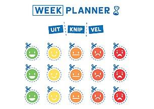

De methoden dromen- ontdekken- doen van het Kennisplein Gehandicaptenzorg is een van de onderdelen die binnen de BAF wordt ingezet. Om jou als begeleider te helpen mensen met een verstandelijke beperking in het dagelijks leven meer in beweging te krijgen. Het geeft handvatten hoe je bewegen meer onderdeel maakt van het dagelijks leven van je cliënt. Samen doorloop je met je cliënt daarbij de fases: dromen, ontdekken en doen.
Aan de hand van de stappen uit deze methode ga je met behulp van een beweegposter en weekplanner in gesprek over wat je cliënt al doet aan beweging én graag wil doen om meer te bewegen. De handreiking beschrijft hoe je als begeleider aan de slag kunt gaan met de beweegposter en weekplanner
Voor begeleiders zijn er twee handreikingen één voor zorginstellingen ↗ en één voor ambulante begeleiding ↗. De handreikingen beschrijven hoe je als begeleider aan de slag kunt gaan met de beweegposter en de weekplanner.
Met de beweegposter↗ kun je de dromen van cliënt achterhalen. Je geeft antwoord op de vraag: Hoeveel zou je cliënt graag willen bewegen en wat kan hij/zij allemaal doen om te bewegen? De poster↗ bestaat uit twee kanten. De linkerkant gaat over de dingen die je cliënten nu al doen aan beweging in het dagelijks leven. Aan de rechterkant komen dingen te staan die je cliënten zouden kunnen en willen doen om meer te bewegen in het dagelijks leven.

Na het invullen van de beweegposter↗ kun je daadwerkelijk aan de slag. Het echte doen moet natuurlijk nog gebeuren. De weekplanner↗ en het bijbehorende uitknipvel kunnen daarbij helpen.
Met bovenstaande hulpmiddelen ga je van bewust worden naar actie. Door te plannen wanneer je cliënt meer wilt bewegen en te kijken of het ook lukt. Luister daarbij naar je cliënt en probeer niet teveel te sturen; het gaat om wat hij/zij graag wil en kan. De handreiking biedt een uitgebreid stappenplan de beweegposter en weekplanning goed te gebruiken.
Bewegen gaat ook over plezier maken. Bekijk een filmpje over de methode en laat je inspireren!